Welcome to Swift Motion Toolkit Manual
Overview
Swift Motion Toolkit is a set of character animation tools that integrates functions such as mo-cap resource import, animation retargeting, and Root Motion processing, etc. At the same time, it also supports retargeting AnimSequence assets between different skeletal meshes.
Features
- Import mo-cap animation in BVH format and provide a preview.
- Retarget mo-cap animation to AnimSequence asset.
- Supports more precise restoration of the position of end joints using IK.
- Supports synchronizing root motion to root bone and IK bones.
- Supports baking vertical or (and) horizontal root displacements into animations.
- Support for selectively preserving root rotation.
- Support for converting animations with root motion to in-place animations.
Purchase page
Showcase
Vedio Tutorial
Swift Motion Toolkit tutorials 01
Swift Motion Toolkit tutorials 02
Swift Motion Toolkit tutorials 03
Related assets
Motion Hierarchy
Motion Hierarchy asset contains the skeleton hierarchy used in mo-cap animation and a retarget base pose.
Motion Data
Motion Data contains a series of pose data related to time in mo-cap animations. And hold a reference to a Motion Hierarchy asset. This Motion Hierarchy asset can explain the hierarchy of each pose in Motion Data.
Motion Hierarchy Retargetable
Motion Hierarchy Retargetable holds a reference to a Motion Hierarchy asset. This asset allows users to define several bone chains for action retarget, and allows users to define new retarget base poses (if the retarget base pose is not defined in Motion Hierarchy Retargetable, the retarget base pose in Motion Hierarchy will be used).
Skeleton Hierarchy
Skeleton Hierarchy holds a reference to a USkeleton asset. This asset allows users to define a new retarget base pose (if the retarget base pose is not defined in Skeleton Hierarchy, the retarget base pose in USkeleton will be used).
Skeleton Hierarchy Retargetable
Skeleton Hierarchy Retargetable holds a reference to a Skeleton Hierarchy * asset. This asset allows users to define several bone chains for action retarget, and a new retarget base pose (if the retarget base pose is not defined in Skeleton Hierarchy Retargetable, the retarget base pose in Skeleton Hierarchy will be used).
Motion to AnimSeq Retargeter
Motion to AnimSeq Retargeter holds a pair of Hierarchy Retargetable as the source and target for retarget. This asset allows users to configure the bone chain mapping tables of the source and target, as well as FK, IK, and Root Motion. And provide a preview and export of the retarget results.
Editor
Motion Hierarchy Editor
Support preview and editing of Motion Hierarchy.
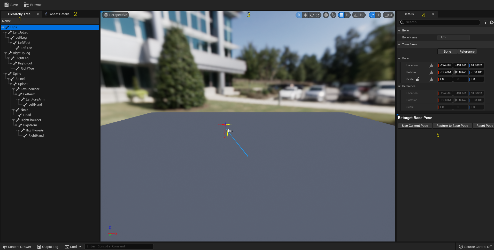
1. Hierarchy Tree Tab
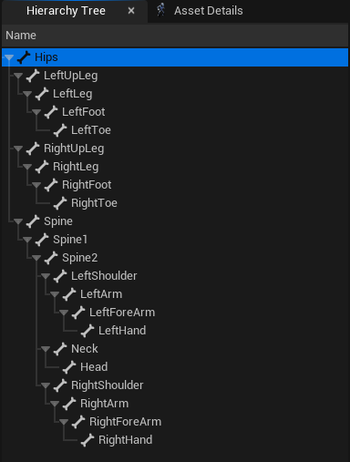
2. Asset Details
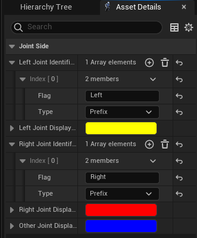
| Property | Description |
|---|---|
| Left Joint Identification List | Left Joint Identification List |
| Flag | The identifier in the joint name |
| Type | Identification type: 1. Prefix 2. Suffix 3. Contain |
| Left Joint Display Color | The color displayed for the left joint |
| Right Joint Identification List | Right Joint Identification List |
| Flag | The identifier in the joint name |
| Type | Identification type: 1. Prefix 2. Suffix 3. Contain |
| Right Joint Display Color | The color displayed for the right joint |
| Other Joint Display Color | The color displayed for other joints |
(Note: Multiple elements are allowed in the identification list. If the joint name meets any of these conditions, it is judged as 'TRUE'.)
3. Viewport Tab
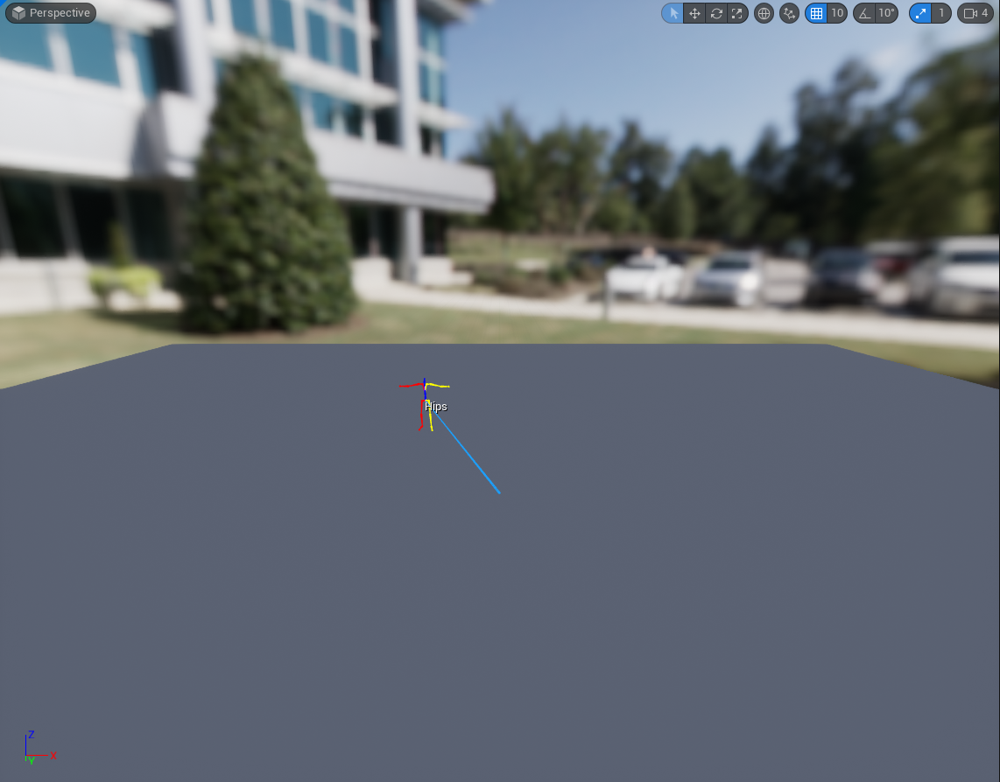
4. Details Tab
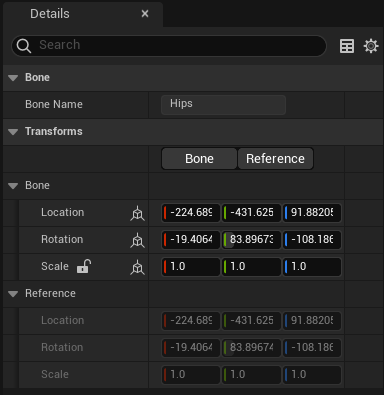
5. Retarget Base Pose Tab
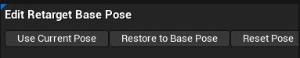
| Control | Description |
|---|---|
| Use Current Pose | Write the pose in the viewport to Retarget Base Pose |
| Restore to Base Pose | Restore Retarget Base Pose to a viewport |
| Reset Pose | Write the reference pose to Target Base Pose |
Motion Data Editor
Support preview of Motion Data.
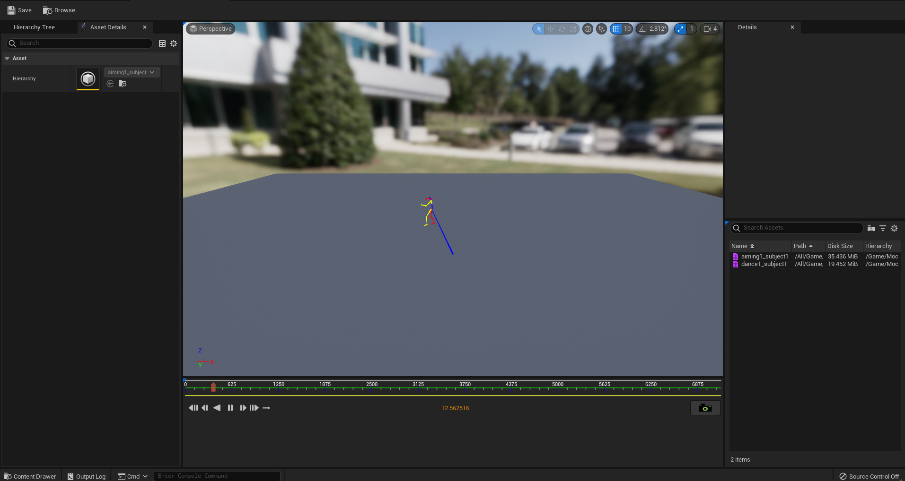
1. Hierarchy Tree Tab
2. Asset Details Tab
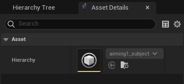
3. Viewport Tab
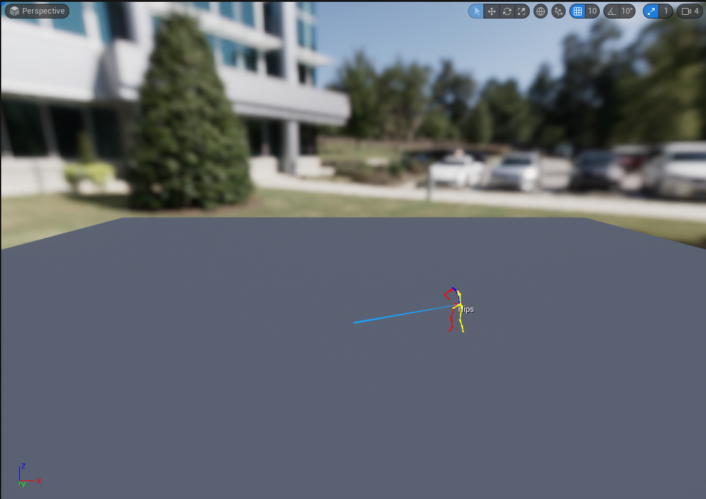
4. Player Controller Tab
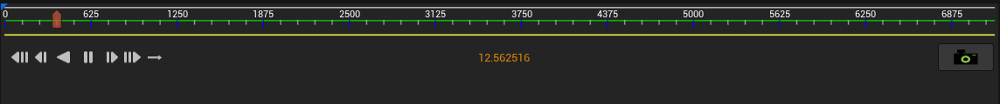
Zoom can be done through the scroll wheel
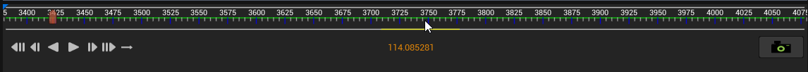
Right click drag to pan the timeline left and right
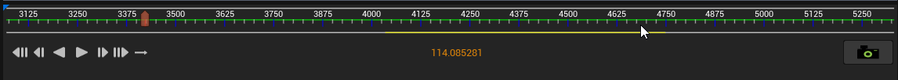
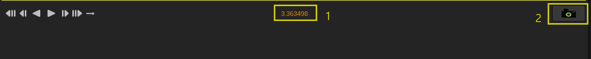
| Control | Description |
|---|---|
| 1. Spin Box | Write the pose in the viewport to Retarget Base Pose |
| 2. Retarget Base Pose Snapshot | Snapshot and upate Retarget Base Pose in hierarchy asset |
5. Details Tab
6. Motion Data Browser Tab
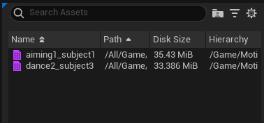
Motion Hierarchy Retargetable Editor
Support preview and editing of Motion Hierarchy Retargetable.
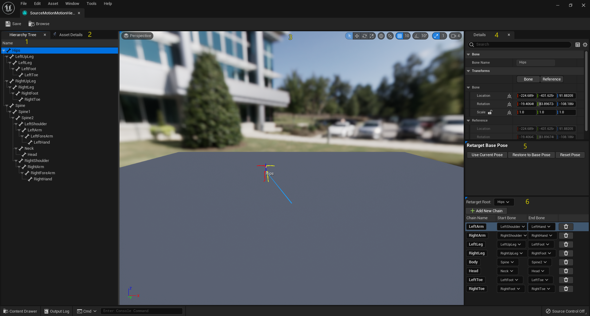
1. Hierarchy Tree Tab
2. Asset Details Tab
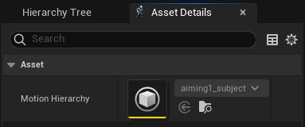
3. Viewport Tab
4. Details Tab
5. Edit Retarget Base Pose Tab
| Control | Description |
|---|---|
| Use Current Pose | Write the pose in the viewport to Retarget Base Pose |
| Restore to Base Pose | Restore Retarget Base Pose to a viewport |
| Reset Pose | Write the reference pose to Target Base Pose |
6. Retarget Chains Tab
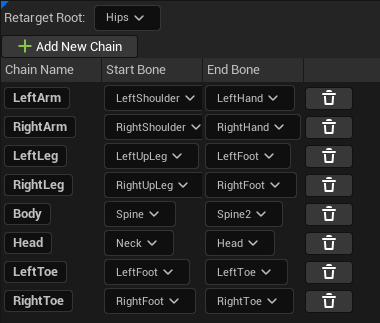
Allow copy and paste
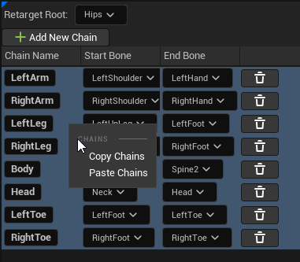
Skeleton Hierarchy Editor
Supports preview and editing of Skeleton Hierarchy.
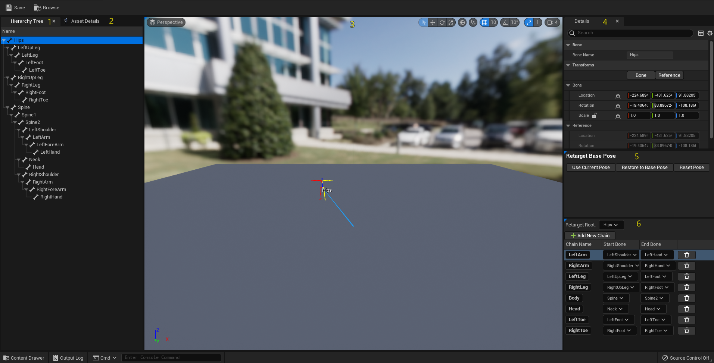
1. Hierarchy Tree Tab
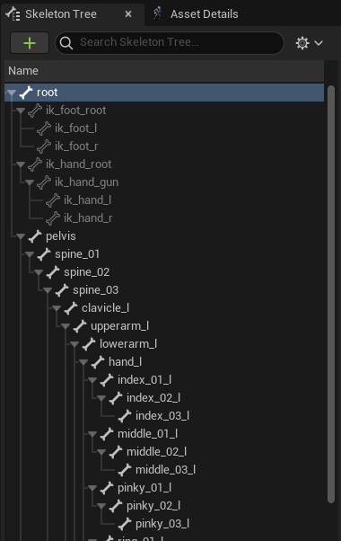
2. Asset Details
| Property | Description |
|---|---|
| Left Joint Identification List | Left Joint Identification List |
| Flag | Left Joint Identification List |
| Type | Identification type: 1. Prefix 2. Suffix 3. Contain |
| Left Joint Display Color | The color displayed for the left joint |
| Right Joint Identification List | Right Joint Identification List |
| Flag | The identifier in the joint name |
| Type | Identification type: 1. Prefix 2. Suffix 3. Contain |
| Right Joint Display Color | The color displayed for the right joint |
| Other Joint Display Color | The color displayed for other joints |
(Note: Multiple elements are allowed in the identification list. If the joint name meets any of these conditions, it is judged as 'TRUE'.)
3. Viewport Tab
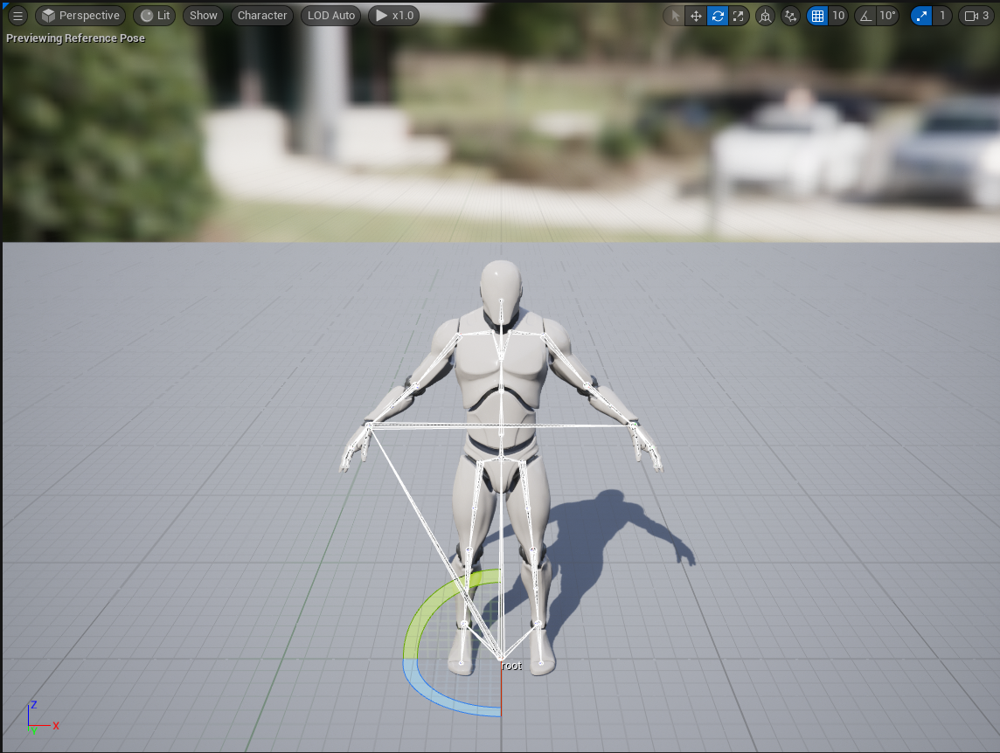
4. Details Tab
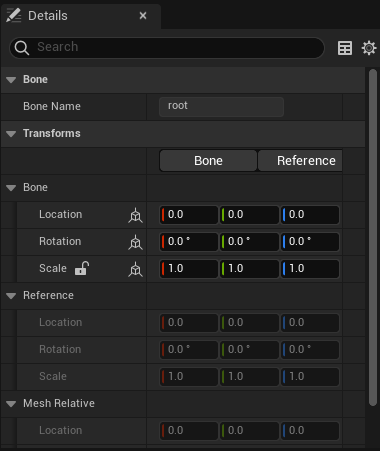
5. Retarget Base Pose Tab
| Control | Description |
|---|---|
| Use Current Pose | Write the pose in the viewport to Retarget Base Pose |
| Restore to Base Pose | Restore Retarget Base Pose to a viewport |
| Reset Pose | Write the reference pose to Target Base Pose |
Skeleton Hierarchy Retargetable Editor
Support for preview and editing of Skeleton Hierarchy Retargetable.
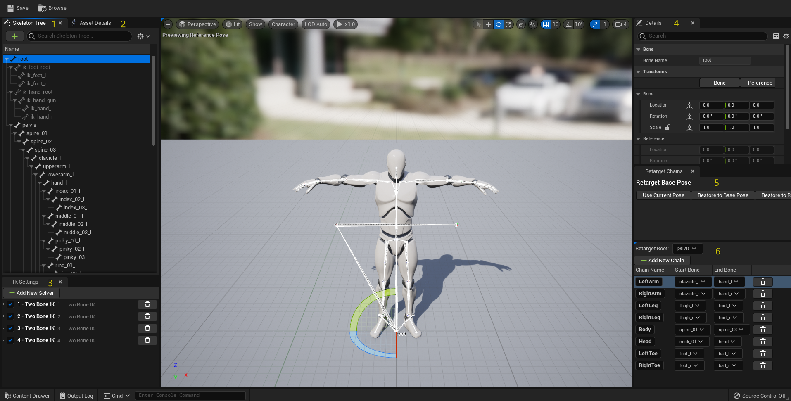
1. Hierarchy Tree Tab
2. Asset Details Tab
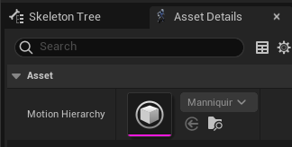
3. IK Settings Tab
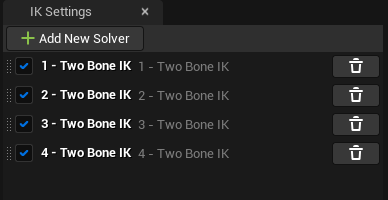
| Control | Control | Description |
|---|---|---|
| 1 | Add New Solver | Add New Solver |
| 2 | Check box | Enable/Disable solver |
| 3 | Trash can icon button | Delete corresponding solver |
(Note: Select any solver , and its configuration interface will be displayed in the Details tab.)
4. Viewport Tab
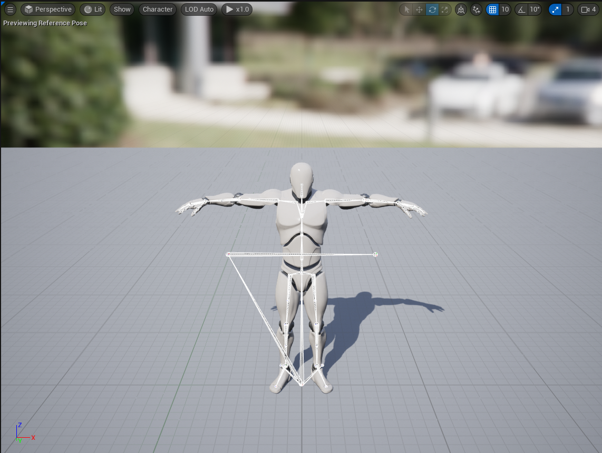
5. Details Tab
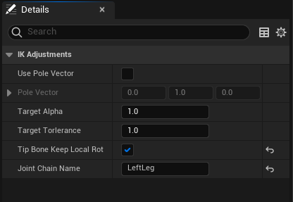
| Property | Description |
|---|---|
| Use Pole Vector | Whether to use pole vector |
| Pole Vector | Pole Vector |
| Target Alpha | Target application level |
| Target Alpha | Target tolerance amount |
| Tip Bone Keep Local Rot | Whether the end node keeps the rotation of the Local space after applying IK, or keeps the rotation of the Global space before applying IK |
| Joint Chain Name | Bone chain name |
6. Edit Retarget Base Pose Tab
| Control | Description |
|---|---|
| Use Current Pose | Write the pose in the viewport to Retarget Base Pose |
| Restore to Base Pose | Restore Retarget Base Pose to a viewport |
| Reset Pose | Write the reference pose to Target Base Pose |
7. Retarget Chains Tab
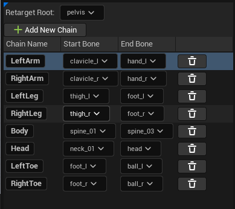
Allow copy and paste
Motion to AnimSeq Retargeter Editor
Supports retarget settings between source and target and preview of results.
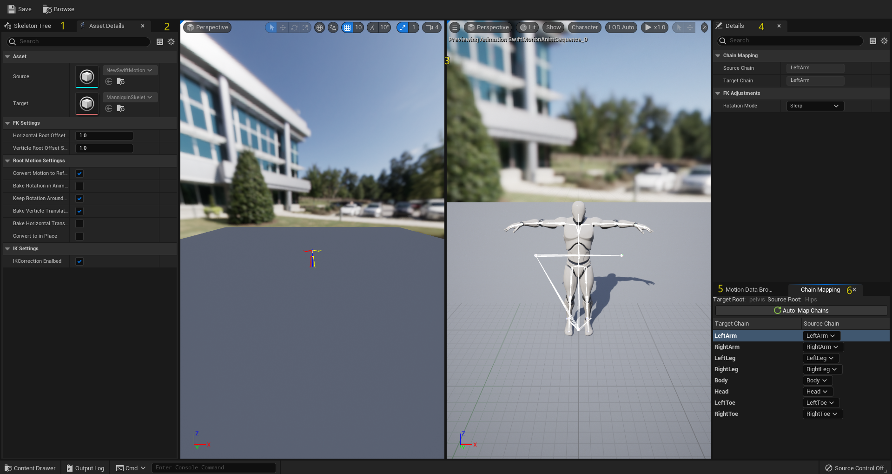
1. Hierarchy Tree Tab
2. Asset Details Tab
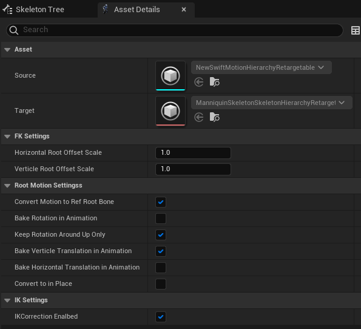
| Property | Description |
|---|---|
| Source | Source Retargetable |
| Target | Target Retargetable |
| Horizontal Root Offset Scale | Root offset scaling in the horizontal direction |
| Verticle Root Offset Scale | Root offset scaling in the vertical direction |
| Convert Motion To Root Bone | Set motion to root bone |
| Bake Root Rotation in Animation | Bake the rotation of the root node to the animation |
| Keep Root Rotation Around Up Only | Keep Root only around the rotation in the upward direction |
| Bake Root Verticle Translation in Animation | Bake the vertical displacement of the root node to the animation |
| Bake Horizontal Translation in Animation | Bake the horizontal displacement of the root node to the animation |
| Convert to In Place Animation | Whether to convert to in-place animation |
| IKCorrection Enalbe | Whether to enable IK |
3. Source Viewport Tab & Target_Viewport Tab
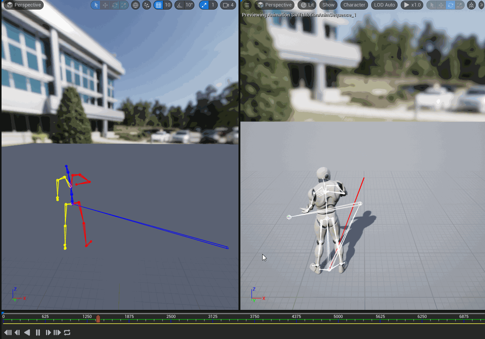
4. Player Controller Tab
Zoom with scroll wheel
Right-click and drag to pan the timeline left and right
5. Details Tab
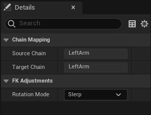
| Property | Description |
|---|---|
| Source Chain | Source bone chain |
| Target Chain | Target joint chain |
| Rotation Mode | Select the mode for establishing the mapping relationship between the source and target chains. |
6. Motion Data Browser Tab
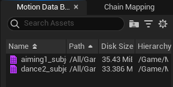
7. Chain Mapping Tab
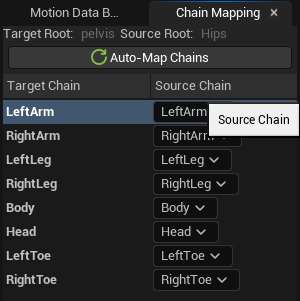
| Control | Description |
|---|---|
| Auto-Map Chains | Attempt to automatically pair by name. |
| Drop-down menu in the Source Chain column | Manually select the source joint chain |
Quick Start
In this quick start guide we will show you how to import a mo-cap file saved in bvh format into Unreal Engine Editor and retarget it to skeletal animation of an existing character. It also shows how to convert animations between two characters with different bone hierarchies, such as retargeting animations downloaded from the mixamo.com website to standard Unreal Engine skinned characters. For more detailed use, please refer to the Video Tutorials
Enable plugin
Download and make sure to enable the plugin in the editor.
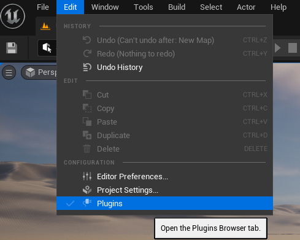
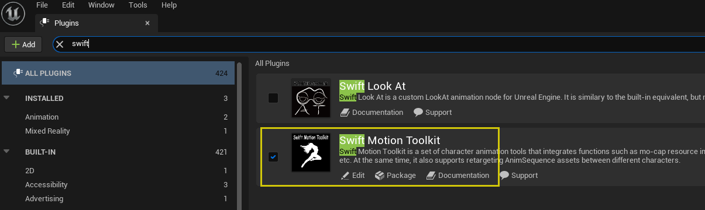
Retarget mo-cap to AnimSequence asset
Import motion capture resources
Drag and drop the Mocap resource file in bvh format to the Content Browser of Unreal Engine.
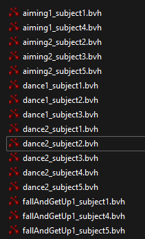
You can choose to import Hierarchy assets only or Motion Data assets as well. If you need to import a Motion Data asset, you must select a compatible Hierarchy asset. You can check to import Hierarchy assets or select existing Hierarchy assets.
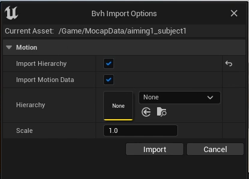
If you choose to import both, the result is shown in the image below:
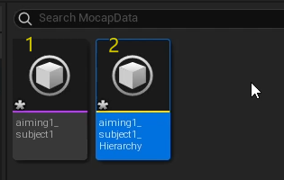
(1) is Motion Data, (2) is Motion Hierarchy
Assets can be double-clicked to open them for viewing in the Motion Data Editor and Motion Hierarchy Editor respectively.
Adjust the Base Retarget Pose in the Motion Hierarchy asset to TPose
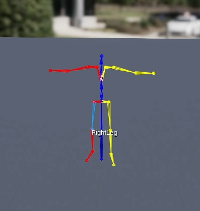
Before
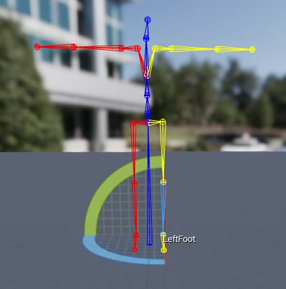
After
In the Edit Retarget Base Pose panel:
- Click the Use Current Pose button to set the pose in the viewport to the Retarget Base Pose used by the Retargetable asset.
- Click the Restore to Base Pose button to restore the pose in the viewport to Retarget Base Pose.
- Click the Reset Pose button to reset the pose in the viewport to the Retarget Base Pose used by the Hierarchy asset that the Retargetable depends on.
Create the Motion Hierarchy Retargetable asset
by selecting the Motion Hierarchy Retargetable option in the Swift Motion Toolkit category of the Content Browser context menu.
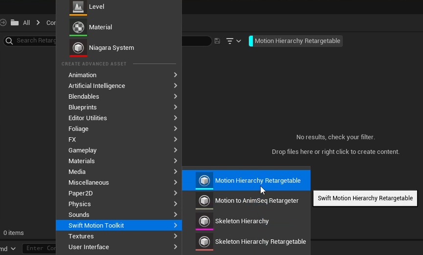
In the popup select the Motion Hierarchy asset as the retarget source.
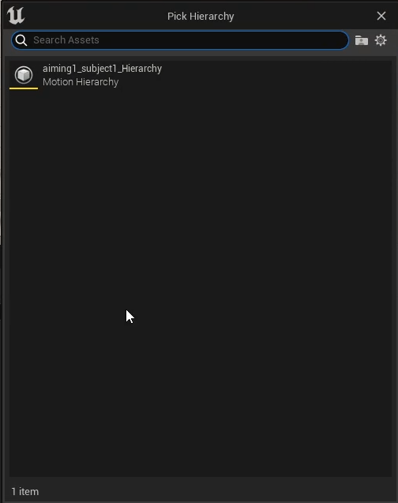
The following is the Motion Hierarchy Retargetable asset created:
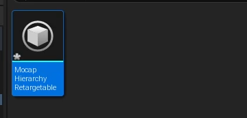
Double-click an asset to open the corresponding editor:
In the Joint Chain Settings panel, the Joint Chain and the Retargetable Root Bone for the current Retargetable can be defined.
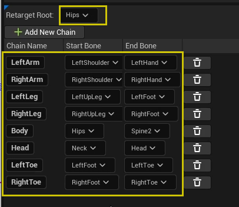
Create the Skeleton Hierarchy asset.
Via selecting the Skeleton Hierarchy option in the Swift Motion Toolkit category of the Content Browser context menu.
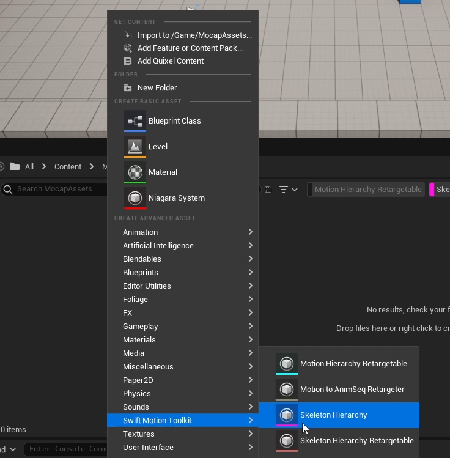
Select the Skeletal Mesh asset in the popup .
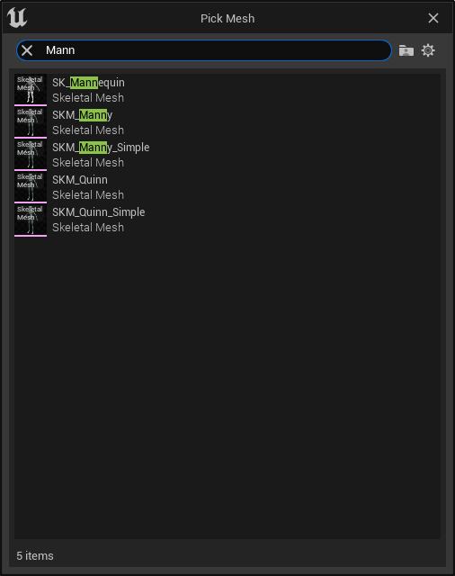
The Skeleton Hierarchy asset created is as follows :
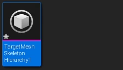
Double-click an asset to open the corresponding editor:
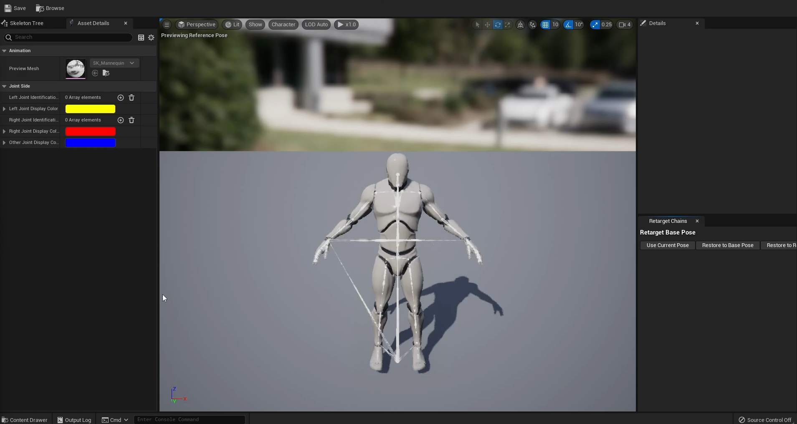
Edit Retarget Base Pose in the viewport (recommend adjusting it to T Pose).
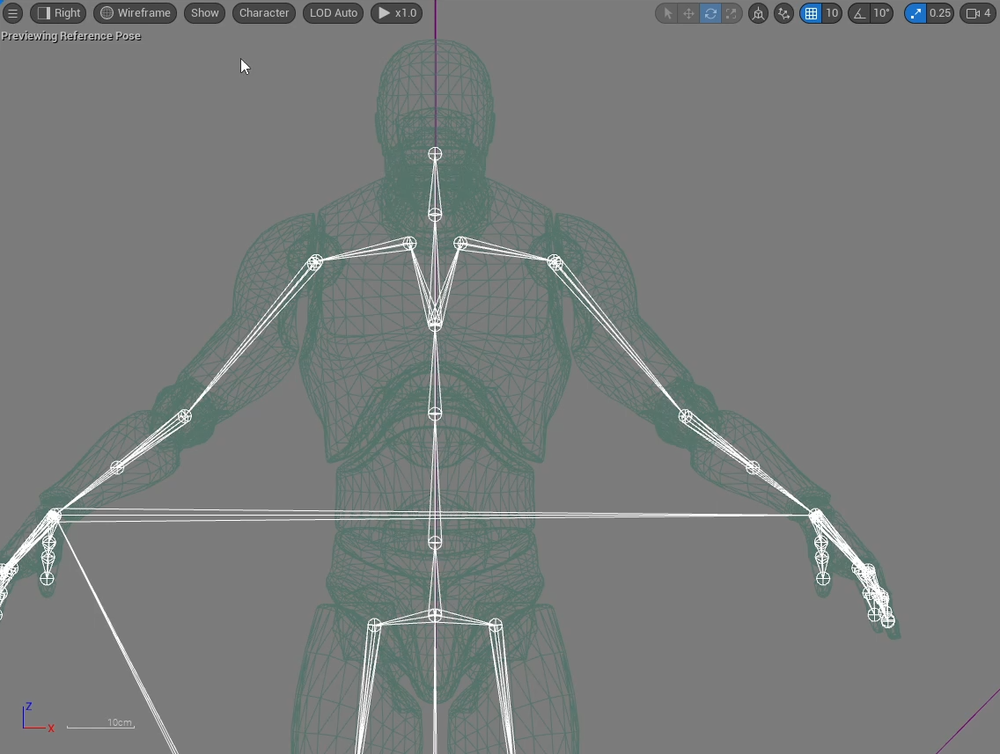
BeforeAfter
In the Edit Retarget Base Pose panel:
- Click the Use Current Pose button to set the pose in the viewport to the Retarget Base Pose used by the Retargetable asset.
- Click the Restore to Base Pose button to restore the pose in the viewport to Retarget Base Pose.
- Click the Reset Pose button to reset the pose in the viewport to the Retarget Base Pose used by the Hierarchy asset that the Retargetable depends on.
Create the Skeleton Hierarchy Retargetable asset.
Via selecting the Skeleton Hierarchy Retargetable option in the Swift Motion Toolkit category of the Content Browser context menu.
Select the Skeleton Hierarchy asset in the popup .
The following is the created Skeleton Hierarchy Retargetable asset:
Double-click an asset to open the corresponding editor:
In the Joint Chain Settings panel, it is possible to define the Joint Chain and the Retargetable Root Bone for the current Retargetable.
Create Motion to AnimSeq Retargeter
By selecting Motion to AnimSeq from the Swift Motion Toolkit category in the Content Browser context menu The Retargeter option creates corresponding assets.
In the pop-up window select the Motion Hierarchy Retargetable asset for the source and the Skeleton Hierarchy Retargetable asset for the target respectively.
The Motion to AnimSeq created is as follows Retargeter assets:
Double-click an asset to open the corresponding editor:
In the Chain Mapping panel, we can set the mapping relationship between the retarget source and target Joint Chains.
Then double-click on the asset in the Motion Data Browser to preview the retargeting result in the viewport.
Retarget between AnimSequence assets
for using an AnimSequence asset as a retarget source is similar to using a Mocap asset as a retarget source. We first need to create a Hierarchy asset and a Hierarchy Retargetable asset based on the Skeletal Mesh asset of the retarget source. Then use the Retargeter asset to create a mapping between the two for retarget. Converted assets can be used out of the box in Unreal Engine because our tool does proper handling of root joints and IK joints.
Source animation download from mixamo.com
Create the Skeleton Hierarchy asset for the source animation.
Via selecting the Skeleton Hierarchy option in the Swift Motion Toolkit category of the Content Browser context menu.
In the popup select the Skeletal Mesh asset as the retarget source.
The Skeleton Hierarchy asset created is as follows :
Double-click an asset to open the corresponding editor:
In the Edit Retarget Base Pose panel:
- Click the Use Current Pose button to set the pose in the viewport to the Retarget Base Pose used by the Retargetable asset.
- Click the Restore to Base Pose button to restore the pose in the viewport to Retarget Base Pose.
- Click the Reset Pose button to reset the pose in the viewport to the Retarget Base Pose used by the Hierarchy asset that the Retargetable depends on.
Create the Skeleton Hierarchy Retargetable asset for the source animation.
Via selecting the Skeleton Hierarchy Retargetable option in the Swift Motion Toolkit category of the Content Browser context menu.
Select the Skeleton Hierarchy asset in the popup .
The following is the created Skeleton Hierarchy Retargetable asset:
Double-click an asset to open the corresponding editor:
Because there is already a fully consistent Joint Chains definition in other Retargetable, we can copy it from there. (Even if it is not consistent, it can be copied. Our tool will ignore the Joint Chains that do not match the Hierarchy correctly.)
Copy
Paste
Set retarget root bone
Create Motion to AnimSeq Retargeter(reuse the previously created Target Skeleton Hierarchy Retargetable)
Via selecting Motion to AnimSeq from the Swift Motion Toolkit category in the Content Browser context menu The Retargeter option creates corresponding assets.
In the pop-up window select the Motion Hierarchy Retargetable asset for the source and the Skeleton Hierarchy Retargetable asset for the target respectively.
The Motion to AnimSeq created is as follows Retargeter assets:
Double-click an asset to open the corresponding editor:
In the Chain Mapping panel, we can set the mapping relationship between the source and target Joint Chains.
Then double-click on the asset in the Motion Data Browser to preview the retargeting result in the viewport.
Special statement and acknowledgment
The resources used for demonstration in the video come from:
ubisoft-laforge-animation-dataset
The original image of the plugin's icon comes from:
unsplash.com/photos/90v3asMhhL0 Kate Rogge's dance moves are elegant and extraordinary.